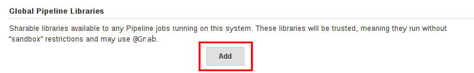

(root)
+- src # Groovy source files
| +- org
| +- foo
| +- Bar.groovy # for org.foo.Bar class
+- vars
| +- foo.groovy # for global 'foo' variable
| +- foo.txt # help for 'foo' variable
+- resources # resource files (external libraries only)
| +- org
| +- foo
| +- bar.json # static helper data for org.foo.Bar扩展共享库
Table of Contents
由于流水线被组织中越来越多的项目所采用，常见的模式很可能会出现。 在多个项目之间共享流水线有助于减少冗余并保持代码 "干燥" [1]。
流水线支持创建 "共享库" ，可以在 外部源代码控制仓库中定义并加载的现有的流水线中。
定义共享库
共享库被一个名称, 源代码检索方法定义， 比如 SCM, 以及可选的默认版本。名称应该是一个简短的标识符，因为它将在脚本中使用。
该版本可以被 SCM理解; 比如, 分支, 标签, 和提交 hashes 所有工作给Git。你还可以声明脚本是否需要显示的请求该库 (下面详细说明), 或者在默认情况下是否存。此外, 如果你在 Jenkins 配置中指定了版本, 你可以阻止脚本选择 different 版本。
指定SCM 最好的方式是使用 SCM 插件，他已经被特别的更新以支持一个新的API 检出一个任意命名的版本 (Modern SCM 选项)。 在编写时, 最新版本的 Git和Subversion 插件支持该模式; 其他人应该遵循。
如果你的SCM 插件没有被集成, 你可以选择 Legacy SCM 并选择提供的任何东西。
在这种情况下, 你需要包含
${library.yourLibName.version} 在SCM的配置中, 所以在检出插件期间，将会扩展该变量来选择需要的版本比如, 对于Subversion,你可以设置 _Repository URL_为
https://svnserver/project/${library.yourLibName.version} 然后使用诸如 trunk 或 branches/dev 或 `tags/1.0`的版本。
目录结构
共享库的目录结构如下:
`src` 目录应该看起来像标准的Java 源目录结构。当执行流水线时，该目录被添加到类路径下。
vars 目录定义可从流水线访问的全局变量的脚本。
每个`*.groovy` 文件的基名应该是一个 Groovy (~ Java) 标识符, 通常是 camelCased。
匹配 *.txt, 如果存在, 可以包含文档, 通过系统的配置标记格式化从处理
(所以可能是 HTML, Markdown等，虽然 txt 扩展是必需的)。
这些目录中的Groovy 源文件 在脚本化流水线中的 “CPS transformation”一样。
resources 目录允许从外部库中使用 libraryResource 步骤来加载有关的非Groovy 文件。
目前，内部库不支持该特性。
根目录下的其他目录被保留下来以便于将来的增强。
全局共享库
有几个地方可以定义共享库, 这取决于用例。 Manage Jenkins » Configure System » Global Pipeline Libraries 必要时可以配置许多库。

由于这些库将是全局可用的, 系统中的任何流水线都可以使用这些库中实现的功能。 utilize functionality implemented in these libraries.
这些库被认为是 "可信的:"他们在Java，Groovy, Jenkins内部API, Jenkins 插件, 或第三方库中运行的任何方法。 这允许你定义将单个不安全的API封进一个更高级别的包装中以便于在流水线中使用的库。 请注意 anyone able to push commits to this SCM repository could obtain unlimited access to Jenkins。 你需要 Overall/RunScripts 权限来配置这些库 (通常这些权限会授予Jenkins 管理员)。
文件夹级别的共享库
创建的任何文件夹都可以有一个与之关联的共享库。该机制允许将特定库的范围扩展到文件夹或子文件夹的所有流水线。
基于文件夹的库不被认为是 "可信的:" 他们在Groovy 沙箱中运行，就像典型的流水线一样。
自动分享库
其他插件可能会添加定义库的方法on the fly。比如, GitHub 分支源 插件提供了 "GitHub 组织文件夹"项，它允许脚本使用一个不被信任的库， 比如`github.com/someorg/somerepo` 而不需要任何额外的配置。在这种情况下, 指定的 GitHub 仓库将会从 `master`分支加载, 使用匿名检出。
使用库
标记为 Load implicitly 的共享库允许流水线立即使用任何此库定义的类或全局变量。为了访问其他共享库, Jenkinsfile 需要使用 @Library 注解,
指定库的名字:

@Library('my-shared-library') _
/* Using a version specifier, such as branch, tag, etc */
@Library('my-shared-library@1.0') _
/* Accessing multiple libraries with one statement */
@Library(['my-shared-library', 'otherlib@abc1234']) _该注解可以在脚本的Groovy允许注解的任何地方。当引用类库时 (在 src/ 目录下),
通常注释会进入 import 语句:
@Library('somelib')
import com.mycorp.pipeline.somelib.UsefulClass|
对于只定义了全局变量 ( 不建议 |
在脚本的 compilation 期间, 在库执行之前，它被解析和加载。这允许Groovy 编译器理解在静态类型检查中使用的符号的意义， 并允许他们在脚本的类型声明中被使用，比如:
@Library('somelib')
import com.mycorp.pipeline.somelib.Helper
int useSomeLib(Helper helper) {
helper.prepare()
return helper.count()
}
echo useSomeLib(new Helper('some text'))Global Variables however, are resolved at runtime.
Loading libraries dynamically
作为 Pipeline: Shared Groovy Libraries 2.7 版本插件, 在脚本中有一个加载库(非隐式)的新选项t: 在构建期间的任何时间， _dynamically_加载库的`library`步骤。
如果你只对使用全局变量/方法 (从 vars/ 目录)感兴趣,
那么语法非常简单:
library 'my-shared-library'此后, 该脚本可以访问该库的任何全局变量。
使用 src/ 目录下的类也是可行的, 但更复杂。
然而，在编译之前，@Library 注释准备了脚本的 “类路径”,
当遇到一个 library 步骤时，脚本已经被编译了。
因此，你不能 import 或 “静态地” 引用库中的类型。
但是你可以动态的使用类库(不用类型检查), 通过`library` 步骤返回值中完全限定的名称访问它们。 使用类似于Java的语法调用`static` 方法:
library('my-shared-library').com.mycorp.pipeline.Utils.someStaticMethod()你也可以访问 static 字段, 并调用构造方法就像他们是名为 new`的 `static 方法:
def useSomeLib(helper) { // dynamic: cannot declare as Helper
helper.prepare()
return helper.count()
}
def lib = library('my-shared-library').com.mycorp.pipeline // preselect the package
echo useSomeLib(lib.Helper.new(lib.Constants.SOME_TEXT))库版本
配置共享库的 "默认版本" 是在 "隐式加载" 被检查时使用, 或者一个流水线通过名称引用了该库,
比如 @Library('my-shared-library') _。如果*not*
定义 "默认版本" , 流水线必须制定一个版本, 比如
@Library('my-shared-library@master') _。
如果在共享库的配置中启用了 "允许默认版本被覆盖"， @Library 注解也可以覆盖为该库定义的默认版本。这同样允许在需要时从不同的版本加载一个 "隐式加载"的库。
当使用 library 步骤你也可以指定一个版本:
library 'my-shared-library@master'由于这是一个常规步骤, 该版本可以被 computed， 而不是像注释那样的常量; 比如:
library "my-shared-library@$BRANCH_NAME"使用与多分支`Jenkinsfile`文件相同的SCM分支加载一个库。 作为另一个示例, 你可以通过参数选择一个库:
properties([parameters([string(name: 'LIB_VERSION', defaultValue: 'master')])])
library "my-shared-library@${params.LIB_VERSION}"注意 library 步骤不会被用来覆盖隐式加载的库的版本。
在脚本启动时已经加载了它, 并且一个给定名称的库不会被加载两次。
检索方法
指定SCM最好的方式是使用SCM 插件，该插件已被特别更新以支持新的 API 来检出一个任意命名的 版本 (Modern SCM 选项)。在编写时, 最新版本的 Git和Subversion插件支持该模式。

遗留 SCM
还没有更新到支持共享库所需的新特性的SCM插件, 仍然可以通过 Legacy SCM 选项被使用。
在这种情况下, 包括 ${library.yourlibrarynamehere.version} 任何
分支/标签/引用 都可以配置为SCM 插件。这确保在检出库的源代码期间, SCM插件会扩展改该变量来 检出库的合适的版本。

动态检索
如果你在 library 步骤只指定了库的名称(optionally with version after @) ,
Jenkins 将查找该名称的预配置库。
(或者在`github.com/owner/repo` 自动库中，加载该文件)。
但是你也可以动态的指定检索方法,
在这种情况下不需要在Jenkins库中预定义库。
这是一个例子:
library identifier: 'custom-lib@master', retriever: modernSCM(
[$class: 'GitSCMSource',
remote: 'git@git.mycorp.com:my-jenkins-utils.git',
credentialsId: 'my-private-key'])最好为你的SCM的精确语法引用 Pipeline Syntax 。
注意，在这些情况下，库的版本 must 指定。
写库
在基本级别, 任何有效的 Groovy 代码 都可以使用。 不同的数据结构, 实用方法等, 比如:
// src/org/foo/Point.groovy
package org.foo;
// point in 3D space
class Point {
float x,y,z;
}访问步骤
类库不能直接调用 `sh`或 `git`这样的步骤。 但是他们可以在封闭的类的范围之外实现方法，从而调用流水线步骤, 比如:
// src/org/foo/Zot.groovy
package org.foo;
def checkOutFrom(repo) {
git url: "git@github.com:jenkinsci/${repo}"
}
return this这可以从一个脚本化流水线中调用:
def z = new org.foo.Zot()
z.checkOutFrom(repo)该方法有一定的局限性; 比如, 它避免了父类的声明。
此外,在构造函数中, 或只是在一个方法中使用 this`可以将一组 `steps 显式地传递给类库:
package org.foo
class Utilities implements Serializable {
def steps
Utilities(steps) {this.steps = steps}
def mvn(args) {
steps.sh "${steps.tool 'Maven'}/bin/mvn -o ${args}"
}
}当在类上保存状态时, 如上图, 类 must 实现
Serializable 接口。确保使用类的流水线可以在Jenkins中适当的挂起和恢复, 如下所示。
@Library('utils') import org.foo.Utilities
def utils = new Utilities(this)
node {
utils.mvn 'clean package'
}如果该库需要访问全局变量, 比如 env, 则应该以类似的方式显式地传递给类库或方法。
而不是将大量的数据从脚本化流水线传递到库中。
package org.foo
class Utilities {
static def mvn(script, args) {
script.sh "${script.tool 'Maven'}/bin/mvn -s ${script.env.HOME}/jenkins.xml -o ${args}"
}
}上面的示例显示传递给 static 方法的脚本,该方法从脚本化流水线中调用:
@Library('utils') import static org.foo.Utilities.*
node {
mvn this, 'clean package'
}定义全局变量
在内部, vars`目录中的脚本根据需求以单例的方式实例化，这允许在单个.groovy` 文件中定义多个方法。例如:
vars/log.groovy
def info(message) {
echo "INFO: ${message}"
}
def warning(message) {
echo "WARNING: ${message}"
}Jenkinsfile
@Library('utils') _
log.info 'Starting'
log.warning 'Nothing to do!'声明式流水线不允许在`script`指令之外使用全局变量 (JENKINS-42360)。
Jenkinsfile
@Library('utils') _
pipeline {
agent none
stage ('Example') {
steps {
script { (1)
log.info 'Starting'
log.warning 'Nothing to do!'
}
}
}
}| 1 | `script`指令在声明式流水线中访问全局变量。 |
|
定义在共享库的变量只会在Jenkins加载后显示在 Global Variables Reference (再 _Pipeline Syntax_下面) ，并将该库作为成功的流水线运行的一部分。 |
|
Avoid preserving state in global variables
避免使用交互或保存状态的方法来定义全局变量。 使用静态类或实例化一个类的局部变量。 === 定义自定义步骤 共享库也可以定义全局变量，和定义内置步骤的操作类似, 比如 例如, 要定义 然后流水线就能引用或调用该变量: 如果用块调用, 然后流水线就能使用这个变量，就像内置的步骤一样，它接收一个块: === 定义更结构化的 DSL 如果你有很多类似的流水线, 全局变量机制提供了一个便利的工具来构建更高级别的获取相似度的 DSL。 比如, 所有的Jenkins插件用同样的方式构建和测试, 所以我们可能会写一个名为 `buildPlugin`的步骤: Jenkinsfile (Scripted Pipeline)
还有一个使用 Groovy的 === 使用第三方库 在*trusted* 库代码中使用 在默认情况下，第三方库会被缓存到Jenkins主机的 === 加载资源 外部库可以使用`libraryResource` 步骤从 该文件做为字符串被加载,适合传递给某些 API或使用 `writeFile`保存到工作区。 建议使用一个独特的包结构，这样你就不会意外地与另一个库发生冲突。 === 事前测试库的变更 如果你在构建一个不被信任的库时注意到一个错误， 只需点击 Replay 链接尝试编辑它的一个或多个源文件, 查看是否构建结果和预期一样。 一旦你对该结果感到满意, 就可以从构建的状态页追踪diff链接, 并将其应用到库的仓库并提交。 (即使请求库的版本是一个分支, 而不是像标记一样的固定版本, 重放构建将会使用与原始构建完全相同的修订: 库源不会被再次检出)。 目前，Replay 不支持受信任的库，在 _Replay_期间也不支持修改资源文件。 === 定义声明式流水线 从2017年9月下旬发布的声明式 1.2开始, 你也可以在你的共享库里定义声明式流水线。下面是一个示例, 它将会执行一个不同的流水线，这取决于构建号是奇数还是偶数: 只有整个 |